Module Summary
This module provides a complete interface for sending SMS messages in Odoo, with multiple options for managing providers, templates, testing, and logs.
Main Features
- SMS Providers Management: Add multiple providers with API URL and custom fields for each provider.
- Dynamic Fields per Provider: Support for adding custom API keys and provider-specific variables.
- Default Provider: Set a default provider via ResConfigSettings for SMS sending.
- SMS Sending: Send SMS messages with dynamic JSON payload and additional extra_params.
- Success Verification: Verify success codes using success_code_var against allowed success_code list.
- SMS Logs: Log all messages with status, recipient number, message content, and response code.
- Message Templates: Jinja2-based templates with dynamic fields like {{ object.field_name }}.
- Test & Preview: Send test messages to a chosen number using selected template and provider.
- Insert Template Fields: Insert fields from the related model directly into the template.
- Global Settings: Configure default provider (sms_default_provider_id), auto-send (sms_auto_send), and fallback message (sms_fallback_message).
Icons & Screenshots
Module Icon
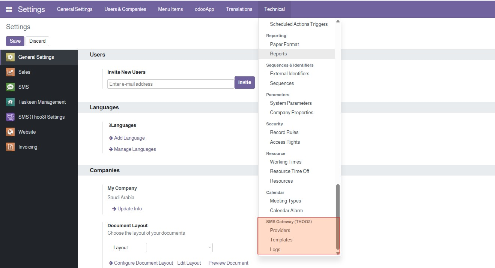
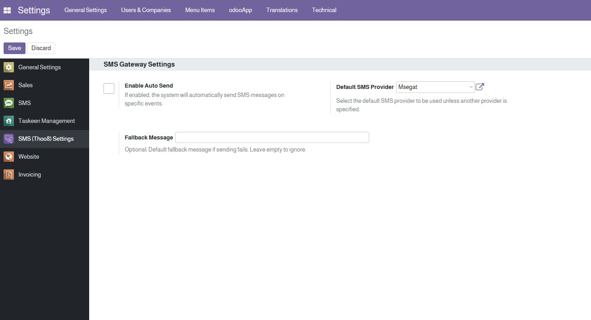
Providers
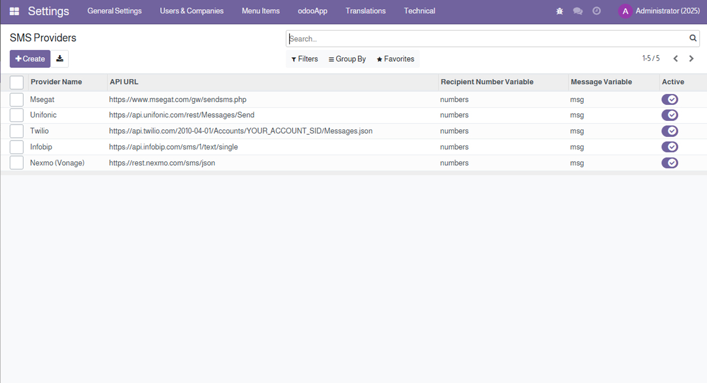
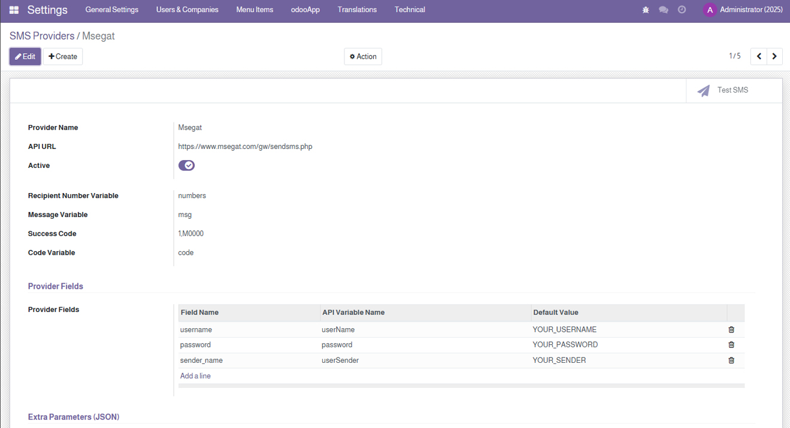
Template Editor
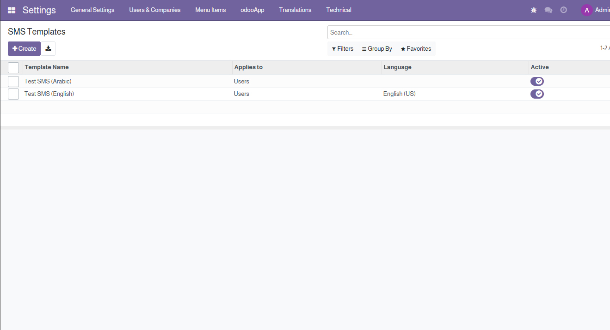
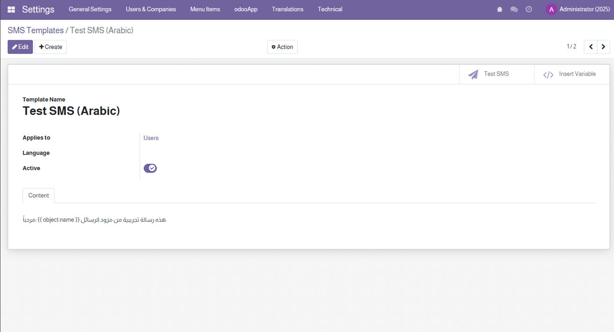
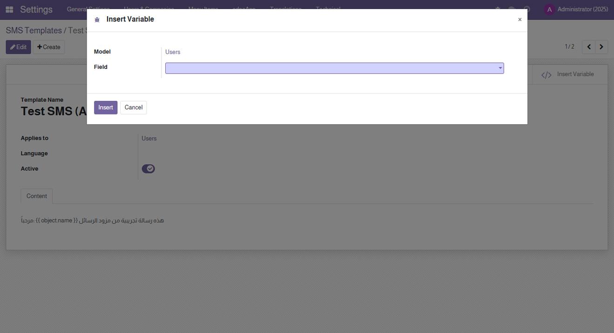
Test Send
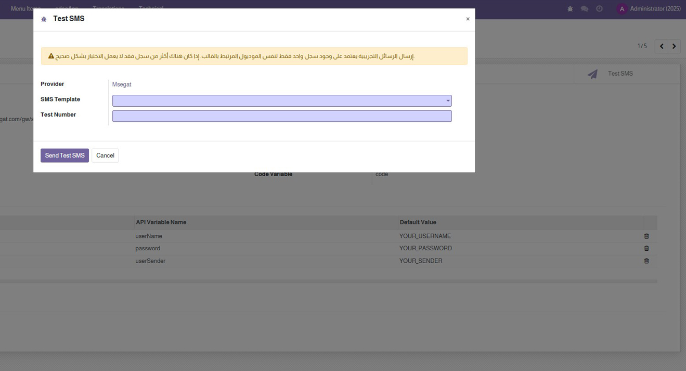
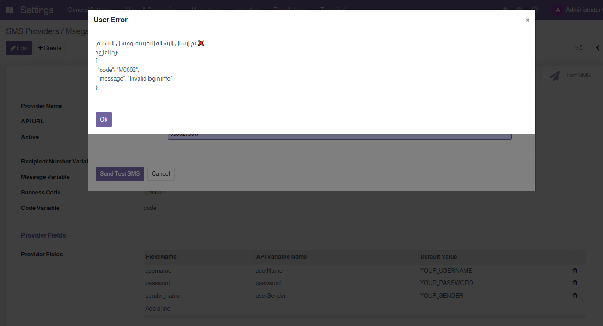
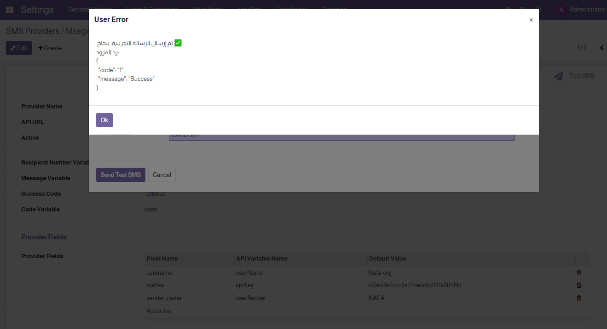
SMS Log View
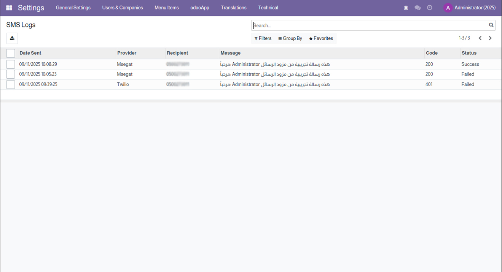
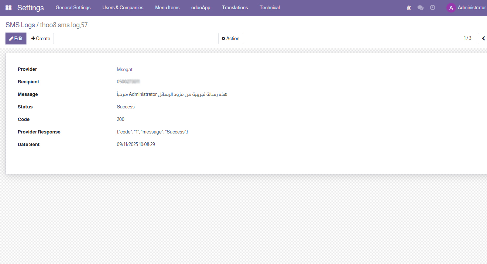
Notes...
Thoo8 SMS Gateway allows easy SMS sending, managing multiple providers, dynamic templates, message logging, and success verification.
Requirements
- Odoo 15
- Internet access to send SMS via providers
- Permissions to access system settings to manage providers and templates